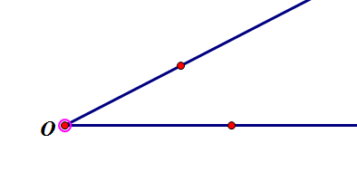
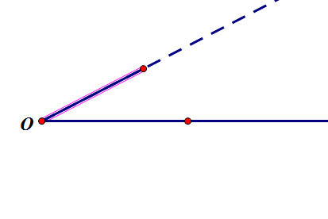
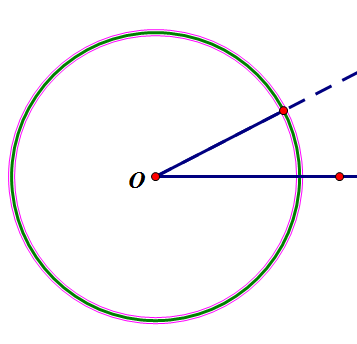
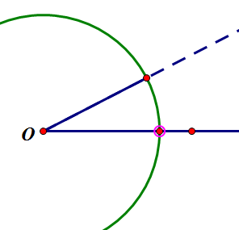
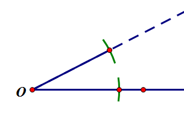
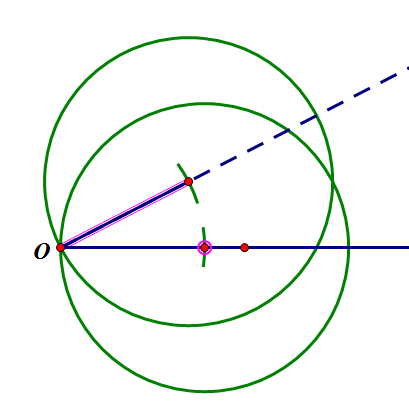
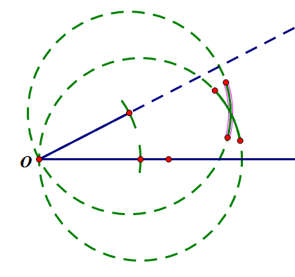
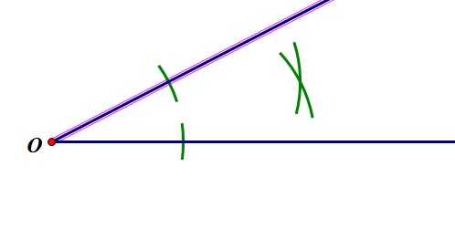
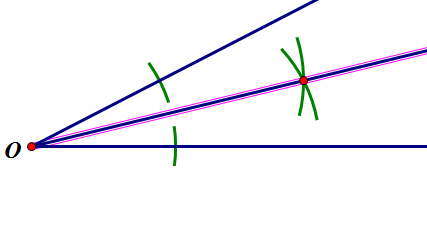
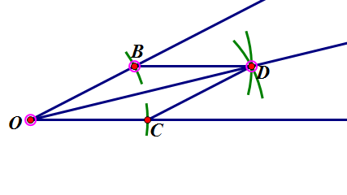

几何画板基础入门教程
作者：TeliuTe 来源：基础教程网
十一、角平分线 返回目录 下一课尺规作图，要有作图痕迹，画角平分线是利用全等三角形，SSS判定两个角相等；
1、角平分线
1）用射线工具，画两条射线，构成一个角，顶点标记为O；

2）射线上还有一个点，选中顶点和这个点，构造一条线段，当作圆规的半径；

3）选中顶点和这个线段，构造一个圆；

4）构造圆和角另一边的交点，顶点到两个交点都是半径，是相等的；

5）用上节课的方法，作出两个弧来，当作是作图痕迹，隐藏圆，两个交点先不隐藏；

6）以两个交点为圆心，线段为半径，分别画两个圆；

7）同样在两个圆交点的地方，作弧，取圆上点的时候，可以用“画点工具”在圆上点一下；

8）两个弧当作是作图痕迹，隐藏圆和各个点，虚线在“显示 - 线型”里改为实线；

9）选中两个弧构造交点，再选中顶点，在菜单“构造 - 射线”，得到角平分线；

10）因为半径都是相等的，加上公共边，所以△OBD≌△OCD（SSS），所以∠BOD=∠COD，所以射线OD是角平分线；

本节学习了画角平分线的基础知识，如果你成功地完成了练习，请继续学习下一课内容；
本教程由TeliuTe制作|著作权所有
基础教程网：http://teliute.org/
美丽的校园……
转载和引用本站内容，请保留作者和本站链接。